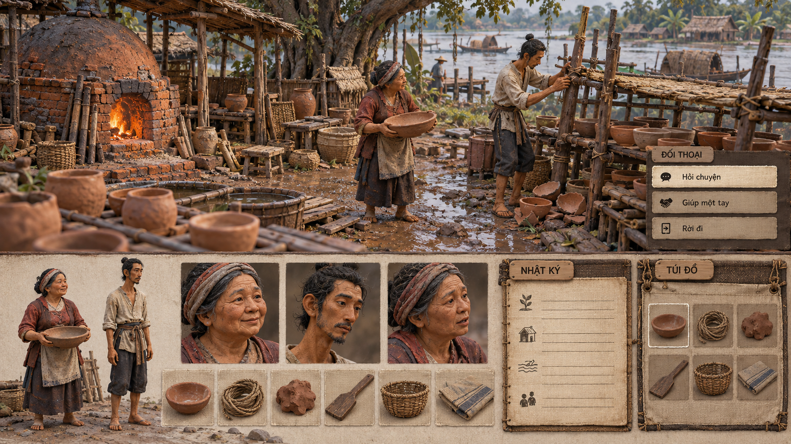

Đất nặn, truyện tranh nét trong, bích họa khoáng màu, RPG dựng sẵn, đêm than bạc và hoạt hình mảng màu. Mỗi hướng thử một cách nhìn xuyên suốt cảnh chơi, con người, vật phẩm và giao diện.
Bộ ảnh xem trước · Bổ sung thư viện tham khảo · Chờ chủ dự án chốt
BẢN THAM KHẢO ĐANG XEM
Đất biết kể

Khối đất nặn, dấu tay và ánh sáng mềm thử biến đời làng thành một sân khấu vật chất gần gũi.
Ảnh tạo riêng để mô phỏng diện mạo game. Cảnh, nhân vật và UI trong artwork là raster minh họa; các nút trên trang chỉ phục vụ xem ảnh.
Chưa tải được ảnh. Kiểm tra thư mục assets của bản thử nghiệm 12.
Đang xem concept Đất biết kể.
Đổi concept bằng sáu nút trên hoặc phím 1 / 2 / 3 / 4 / 5 / 6. Mở toàn khung hoặc PNG gốc để xem chi tiết. Cỡ chữ trang xem chỉ đổi chữ HTML, không làm chữ trong ảnh reflow.
CẢNH / NHÂN VẬT / CHÂN DUNG / VẬT PHẨM / UI
Thử cả quy tắc tạo hình.
Không chỉ đổi phong cảnh hay phủ một bảng màu khác: mỗi hướng đặt câu hỏi về vật liệu, đường nét, hình khối, góc nhìn và cách UI sống cùng thế giới. Có thể chọn một phần hoặc kết hợp ý tưởng giữa các phiên bản.
Các bảng là những đề xuất độc lập. Bố cục, góc máy, nhân vật và tình huống có thể khác nhau; chúng không phải các ảnh chụp cùng một scene và chưa chứng minh pipeline sản xuất.
01 · ĐẤT NẶN / DIỆN MẠO STOP MOTION
Đất biết kể
Khối đất nặn, dấu tay và ánh sáng mềm thử biến đời làng thành một sân khấu vật chất gần gũi.
Câu hỏi khi xem: Nhân vật có tuổi và nghề có còn mang trọng lượng cuộc sống khi hình khối được làm tròn? Ảnh chưa chứng minh chuyển động stop motion.
Quan sát bản này: Ảnh hiện tại nghiêng mô hình tả thực; tiền cảnh có độ mờ. Chất đất nặn giản lược mới đạt một phần.
02 · TRUYỆN TRANH / ĐƯỜNG NÉT RÕ
Nét trong
Nét viền sạch và mảng màu phẳng thử làm rõ người, đồ vật, lối đi và tình huống xã hội như một trang truyện có thể bước vào.
Câu hỏi khi xem: Đường nét có giữ sự khác biệt giữa người và nền ở khoảng cách chơi, hay khiến mọi chi tiết cùng nổi?
Quan sát bản này: Nét viền và màu tiết chế hiện rõ; hậu cảnh vẫn dày chi tiết. Lời thoại trong ảnh chỉ là ví dụ.
03 · BÍCH HỌA / KHOÁNG MÀU
Vách thời gian
Mảng khoáng màu, hình thể giản lược và nhịp bố cục bích họa thử kể một cuộc đời như dấu tích còn lại trên vách.
Câu hỏi khi xem: Chất liệu tường và bố cục biểu tượng có làm khó đọc hành động, khuôn mặt hoặc chữ? Đây là diễn giải mỹ thuật hư cấu.
Quan sát bản này: Chất khoáng màu đi qua cả UI; cảnh còn phối cảnh sâu và nhiều texture hơn ý định bích họa phẳng.
04 · RPG CỔ ĐIỂN / CẢNH DỰNG SẴN
Ký ức CD-ROM
Phối cảnh cố định, vật liệu dựng sẵn và khung giao diện có trọng lượng thử một diện mạo RPG máy tính cuối thập niên 1990.
Câu hỏi khi xem: Người và đạo cụ có đọc rõ trên nền nhiều chi tiết? Ảnh chưa là scene 3D, sprite hay camera đã triển khai.
Quan sát bản này: Không khí bến đò và panel RPG hiện rõ; ảnh còn sắc mịn, chưa đạt độ thô low-res/dither của brief.
05 · THAN CHÌ / ÁNH SÁNG TRONG TỐI
Đêm than bạc
Nét than và những vùng sáng bạc thử dẫn mắt bằng độ sáng, khoảng trống và cử chỉ thay cho một bảng màu rực.
Câu hỏi khi xem: Có còn phân biệt được người, lối đi và đồ dùng khi thu nhỏ? Tông tối cần được xem ở cả cảnh và UI.
Quan sát bản này: Đường sáng dẫn qua người và giếng; cảnh tối khá dày chi tiết. Sắc đỏ xuất hiện ở vài vị trí, không chỉ một điểm.
06 · HOẠT HÌNH / MẢNG MÀU KHÔNG VIỀN
Gió mảng màu
Hình khối cắt gọn, nhịp âm dương và các mảng màu chủ động thử một thế giới hoạt hình có thể nhận ra từ silhouette.
Câu hỏi khi xem: Mảng màu có kể được nghề, tuổi và cảm xúc mà không phụ thuộc viền? Ảnh chưa chứng minh animation hoặc asset tái sử dụng.
Quan sát bản này: Cast, chân dung và UI có mảng rõ; nền còn chi tiết và nhiều lớp bóng hơn ý định cực giản.
Thư viện tham khảo — mọi phiên bản được giữ lại
Sáu hướng này bổ sung thư viện. Vòng mới không tự thay thế, loại bỏ hay đánh giá thấp các bản cũ; có thể quay lại để so sánh hoặc kết hợp.